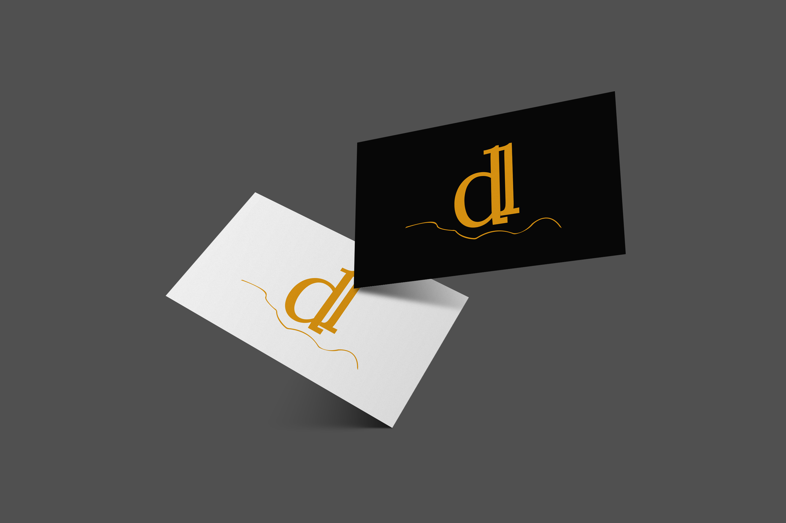
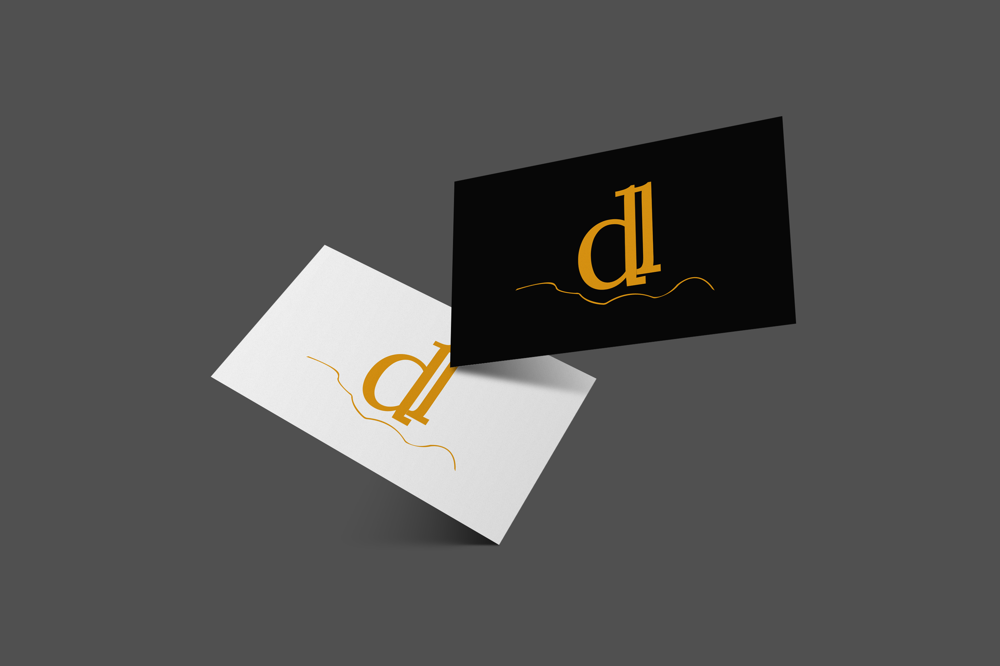

Bootcamp Project - Bakery: Docelene
Web design (UX/UI) and logo design (branding).
 

About this project
Type of project
This is a two weeks solo project that was made in my UX/UI course, with the objective of making a design that shows a brand's identity.
My grade was 18 (0-20).
Difficulties
Since this was a fictional brand, I needed to determine the branding of the bakery which included creating an identity, how the identity would be transmited, how would the website translate the bakery's values into visuals and how the user would relate to it.
It also had not much of user research but more of figuring out what type of user it be.
What I learned
I learned that branding is a subject that most UX designers should understand, and it should not be restricted to graphic designers. There needs to be a connection between the identity of the brand and how it is shown to the user.
Overview
Business goals
This fictional bakery is a high end bakery, specialized in muffins, which has a goal of being known as the most elegant and prestige bakery in Porto.
The highlight of the bakery is enjoying the food and what surrounds you at the same time.
It wants to have a design that reflects its values, without many words.
Problem
Bakery has no online presence and no way to claim the prestige it was desired to have.
The bakery also needs an identity and one that the customers could relate to.
Solution
The design itself was made in a very minimalistic style, using only two colors, simple typography but elegant with a lot of white space.
Why?
These two colors are associated with luxury and rustic.
Usually minimalistic designs are considered sophisticated or elegant, and using that style in a bakery stands out.
The clients of this bakery are young and older adults so therefore it needs a design easy to read while being elegant at the same time.

UX/UI Process
User Persona
I tried to imagine the type of person that would enjoy this bakery.
The bakery is high end which means that the customer has a certain financial level.
The bakery does not have takeaway service and that means people will stay in the building, which the vast majority should be adults.
Wealthy adults normally are busy workers or entrepeneurs, I presume they want a sophisticated place to relax and have a chat with friends or co-workers.
They need a place with high standards because that gives it a feeling of being relatable.
Moodboard
This fictional bakery is a high end bakery, specialized in muffins, which has a goal of being known as the most elegant and prestige bakery in Porto.
It needs to have a design that reflects its values.
Site map
The website is very simple and small, it is meant to be informative only, so there is no need to have several pages with unnecessary content.
The design is meant to go straight to the point and show the product and also the identity of the brand.
Wireframes
Did some lo-fi wireframes and after that, I did the hi-fi wireframes.
Design style guide
A design style guide was made, to clarify the use of typography, primary, secondary and accent colors, icons and the usage of the logos.
Branding
Name
So with the name I thought of the word "doce" which means "sweet" in portuguese, already making people know in what type of niche the business is.
In Portugal the food that is not harmful we usually say it is light or soft. In portuguese (in this context) "leve" means "light" or "soft", but I wanted a more exclusive word.
I went to check synonyms of "leve" that people normally don't use, and "lene" is a synonym and also means healthy.
So I created Docelene, which as I said, indicates the type of niche the business is in and also indicates it is heathy.
Logo
For the logo I wanted something equally minimalistic but with meaning.
Check the picture at the right, the line is actually Rio Douro, the famous river of Porto, where the bakery is fictionally located close to.
It is a small detail that gives a whole new meaning to the logo and is an expandable logo.
What I mean with that is, if the bakery would expand to other places, even around the world, every place would have a minimalistic line that would represent something of that location, and the main logo would just be the name for example.
I also made a submark logo in case of the logo being too big in certain places like small cards or small dimension in a website.